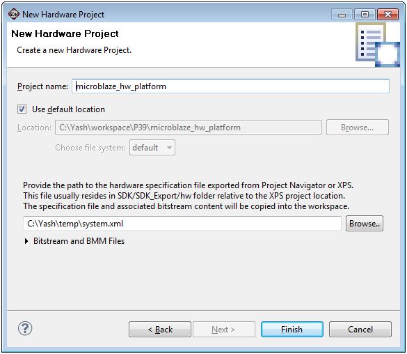

Creating a New Hardware Platform Specification
To create a new hardware platform specification for application development in SDK, do the following:
- Click File > New > Project to open the New Project wizard, select Xilinx > Hardware Platform Specification and click Next.
- In the Project name field, type a name for the Hardware Platform Specification project.
- Select the Hardware Platform Specification XML file.
Note: Hardware Platform Specification XML can be exported by either Project Navigator or Xilinx Platform Studio (XPS)

- Click Finish to create your hardware platform specification project.
SDK application projects

Creating a C or C++ project
Copyright © 1995-2012 Xilinx, Inc. All rights reserved.